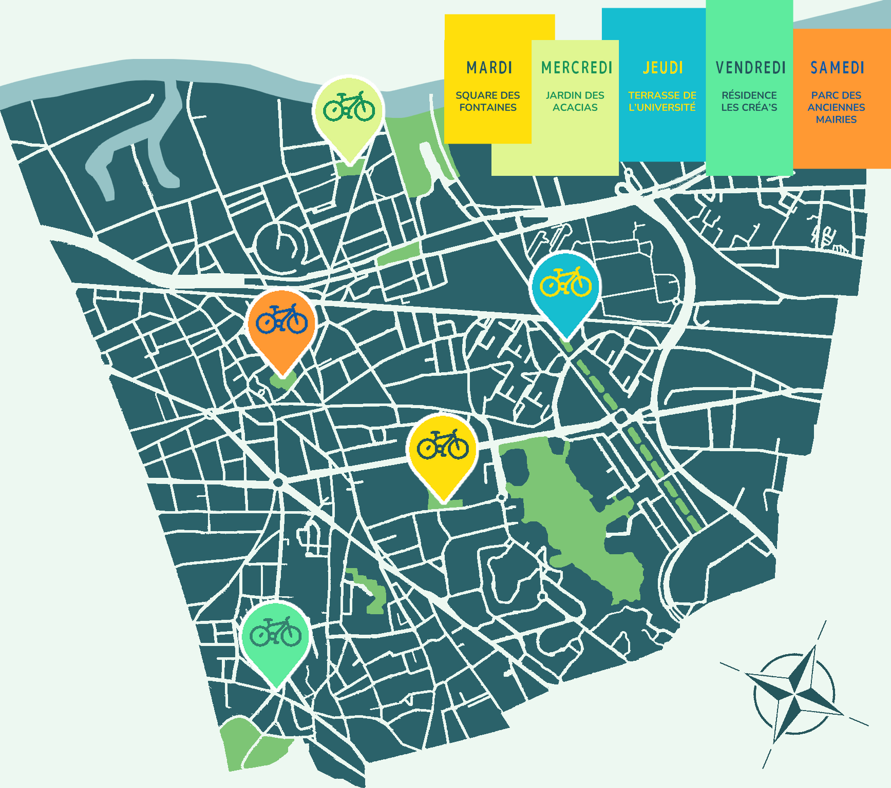

Au cours de l'été 2022, par ces rendez-vous réguliers, l'association proposera des échanges de livres aux habitant·e·s, avec la
possibilité de laisser, en plus des livres, ses coups de coeur, pour donner envie aux personnes suivantes de repartir avec ! Des animations et une distribution de boissons fraîches sont
prévues pour rendre ces moments conviviaux.
Ce sera aussi l'occasion pour PAPET&CO de demander aux habitant·e·s leur avis autour des sujets de la lecture et du réemploi des livres, ainsi que de sonder leurs habitudes de
consommation, afin de mieux comprendre leurs besoins et pouvoir relancer des projets similaires les années suivantes.
Le projet Roule Papet ! est la première réponse à ces problématiques, un pilote pour une future installation pérenne sous la forme d'un tiers-lieu.
Au programme :
- Dons et échanges de livres
- Collecte de vos livres de cœur
- Questions sur un carton ! Le retour de notre quiz sur les livres et le papier
- Lecture
- Vente de boissons fraîches
- Sondage de vos habitudes de lecture et de recyclage
- Documentation sur le réemploi des livres, sur la filière papier etc.
- Animations diverses : « pimper » une boîte à livre, fabriquer du papier, à déterminer au fil de l’été…
Où nous retrouver ?
Du mardi 5 juillet au samedi 17 septembre 2022 (sauf le week-end du 14 juillet et les deux premières semaines d'août), PAPET&CO sera chaque jour de la semaine dans un quartier différent de Nanterre. Retrouvez notre parcours sur la carte :
Les Terrasses d'Été
Les vélos cargo seront de la partie à quatre des Terrasses d'été organisées par la Ville de Nanterre
les 9 et 12 juillet ainsi que les 26 et 30 août !
Pour en savoir plus, retrouvez le programme complet sur leur site :
Le centre social et culturel La Traverse n'est pas en reste et organise ses propres terrasses dans le quartier de l'Université, nous serons présent·e·s à celles des jeudi 7 et 28 juillet !